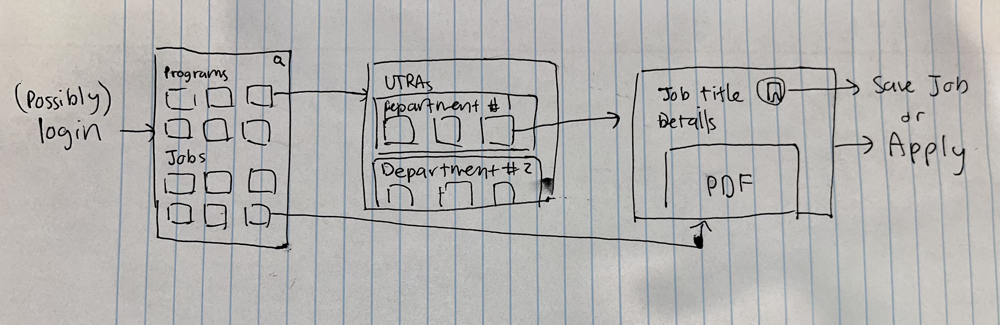
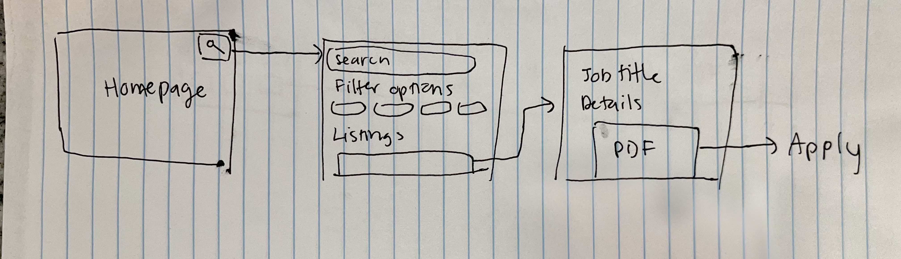
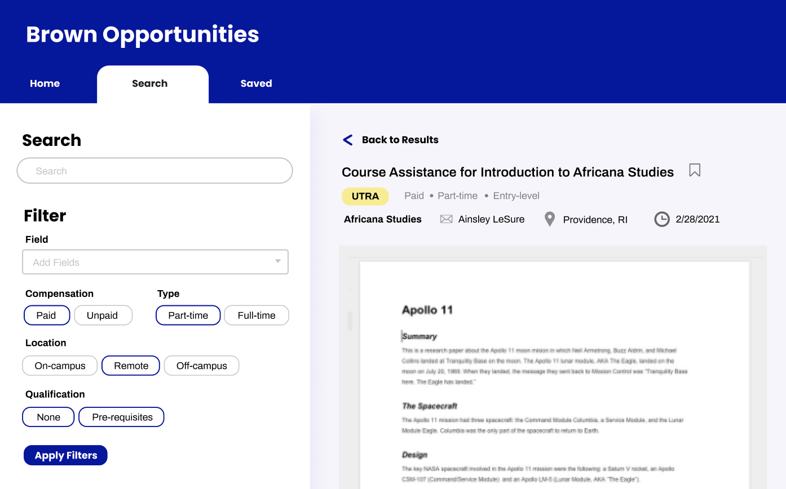
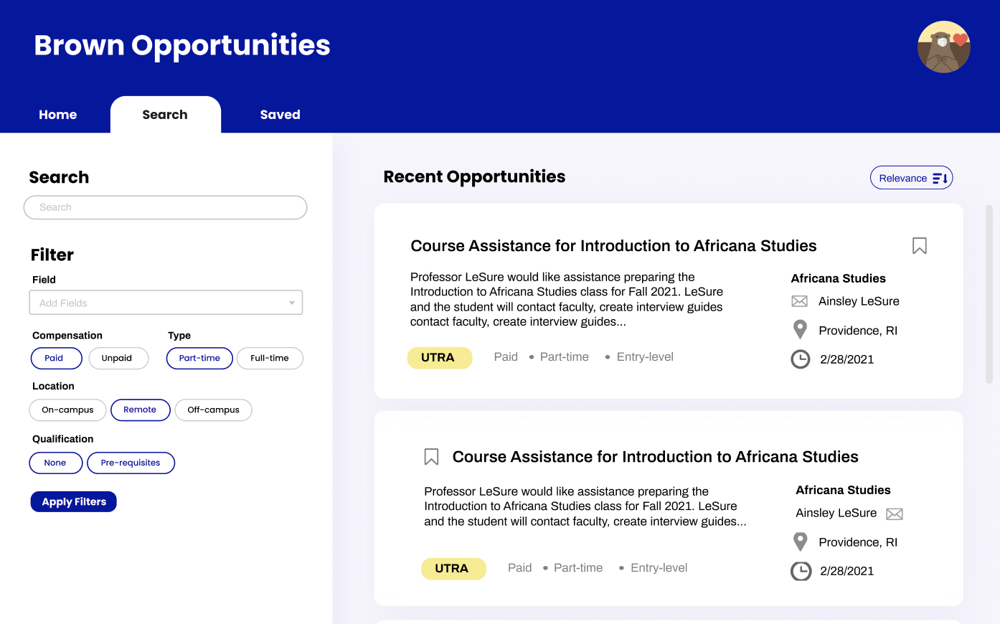
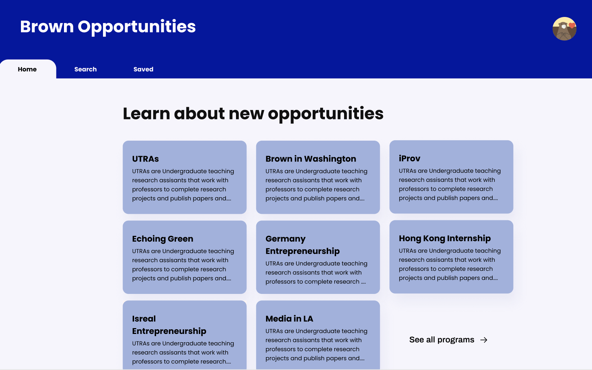
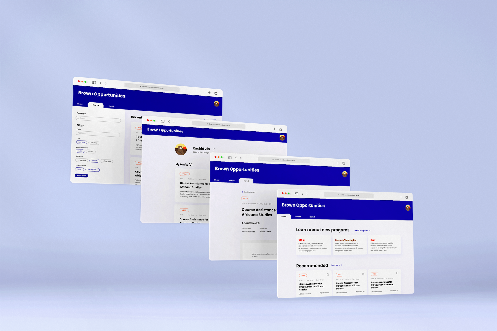

The Problem
What is SPRINT?
SPRINT (Summer/Semester Projects for Research, Internship, Teaching) serves as the umbrella application for funded experiential learning opportunities at Brown University. The original format for finding internships was a large word document, but the large amount of listings made it difficult to search through and apply for internships. The dean came to us with a rough prototype that was created using airtable and wanted a platform that would allow students to easily locate, manage, get info for, and apply to SPRINT opportunities.

Original application document (left), airtable prototype (right).
The Process
Familiarizing myself with the user
After familiarizing myself with the problem space, I set out to find out how real people around me approached internship hunting. I conducted a dozen user interviews, asking students around campus to find out:
- Are you currently looking for job/internship opporunities?
- What platforms do you use to find internships?
- What platform do you use most often to find internships? Why?
- What factors do you consider the most when looking for an internship?
- What industry are you looking to work in?
Based on my user research I found that Linkedin and Handshake were used most often by Brown students when looking for internships. Additionally, information like industry, salary, location, and time were important factors to students.
Competitor Analysis
Linkedin
Students I interviewed mentioned that they liked that you can get email alerts for a specific job search and they liked how easy it was to look through the job descriptions. Users can also really easily save jobs to apply to later.

Handshake
Handshake is a platform targeted towards college student since it was affiliated and promoted by our school. The platform allows users to easily see if you fit the requirements for a job listing as a student.

User Personas
I created two user personas to guide my ideation process. One student Florentin is looking for very specific internships, while the other student Horacio is just browsing the platform.

Ideation
After reviewing my research, I knew that I wanted to create a platform where filtering and searching was a priority. I started designing very rough wireframe sketches on paper before going into Figma to create the digital wireframes.

Florentin's user flow

Horacio's user flow

Wireframes made in Figma
After I had a clearer picture of what the scope of the project was, the team and I decided which features we had time to implement for this semester and which ones to hold off on. For example, we wanted to send automated emails of new opportunities based on a user's saved jobs, but decided that it should be implemented later down the line.
Actually Designing ... not yet
Moodboard
I wanted to emulate a clean, yet fun design that allowed users to easily view the most important details of a listing upfront.

Finally Designing
Iteration #1
I started off with designing the search page since that would be one of the main features. I decided to go with the two-column design to allow for easy access to a variety of filter options. At this point, the developers on the team and I started brainstorming the appropriate database structures to store all the information needed on the frontend as well.

Iteration #2
After some more refinements I conducted some simple user tests to see if the search feature was easy to navigate. The overall feedback I received was that it was straightforward to use the search and filter. However, there were two actionable insights I gained:
- The results felt visually cluttered
- Many people did not engage with the homepage even though I had intended it for it to be a place for exploration



Iteration #3
In order to improve readability and increase engagement I:
- Removed all unnecessary icons
- Used one font throughout the platform
- Reorganized the hierarchy of the job listing component
- Allowed for more whitespace in the overall design
All done!
Final Designs
After a couple more rounds of feedback, I handed off my designs to the developers! I am proud of the designs I ended up creating and it was satisfying to watch the project come together from conception to deployment.
Design 1
Login and Homepage
Explore the latest research opportunities on campus!
Login modal and homescreen
Design 2
Search and Filter
Easily filter through hundreds of listings to find the right fit for you.
Search listing interaction
Design 3
Save Jobs
Save any opportunity and go back to apply once you are ready.
Design 4
Create a Listing
Easily create and preview a new student job.
Creating a new job listing
Conclusion
Next Steps

While it was daunting when I first approached the project, I've definitely learned a lot and grown as a designer! The development team is currently working on implementing the new designs. Next steps for me include:
- Working on transferring the platform to mobile
- Would love to further user test the platform after deployment